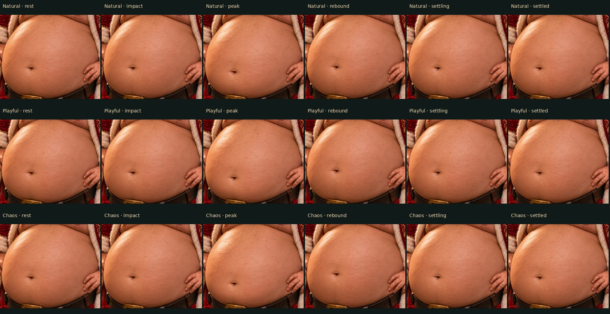
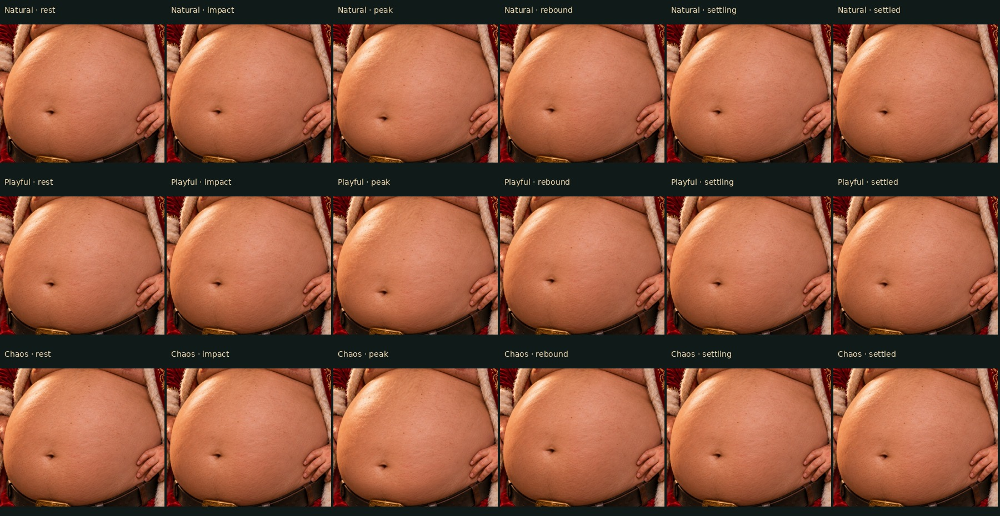
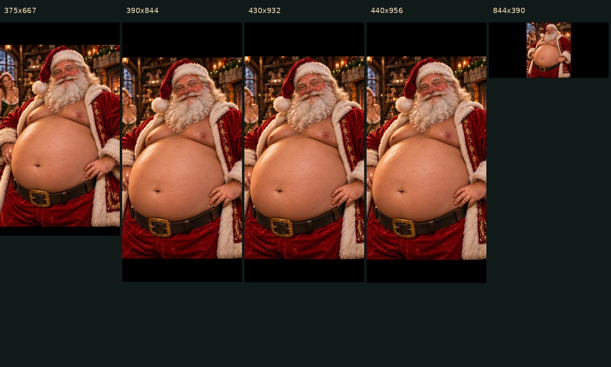

Open the interactive Santa preview · Validation notes
Approved JPEG preserved byte-for-byte. These clips are actual renderer captures at 30 simulated frames per second, showing the first 2.5 seconds after a tap. They are silent and do not measure phone performance. Main and live r10 are unchanged.
Rows: Natural, Playful, Chaos. The final column is after 15 simulated seconds and equals the resting frame.



Physical iPhone Safari feel, frame rate, sound and two-finger gestures still require review. This is a 2-D photo warp with pinned scenery and supported edges. Production deployment awaits visual approval.